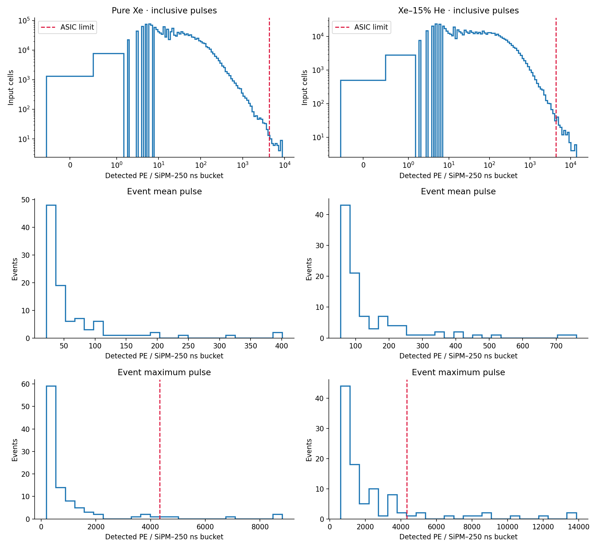
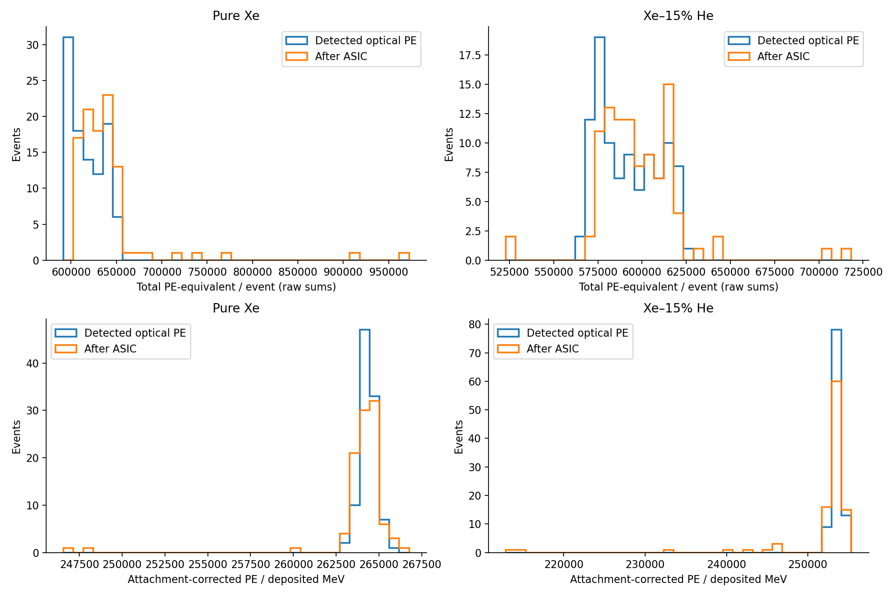
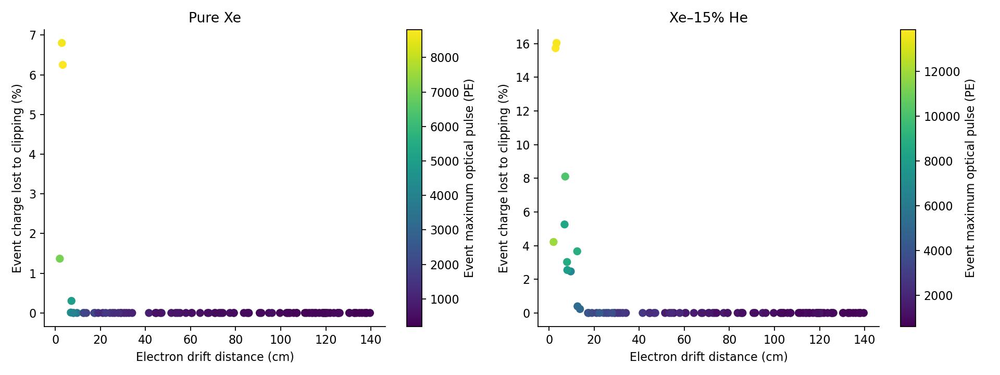

100 matched bb0nu events, IDs 0–99, for both gas models. E/P = 2 kV/cm/bar at 15 bar; 3 mm holes, 5 mm EL depth and 5 mm square-grid pitch. Electron collection is unity. VUV photons emitted uniformly on the hole axis are thinned through absorbing-hole acceptance, TPB conversion 0.65, forward fraction 0.5 and meridional capture 1 − 1/1.5. The combined optical probability is 0.01386501. Guides have a 0.5 mm radial xenon gap; propagation and NOA 87 coupling are ideal. Saved photons are blue photons at the SiPM entrance; TPB is applied exactly once.
The 3 × 3 mm² S14160-3015PS uses packaged PDE 0.32 (peak-value approximation), gain 360000, and 700 kcps primary dark rate. Each optical/dark detection contributes full gain; microcell occupancy and recovery are deferred. The device has a silicone-resin entrance window; its transmission is included in PDE. The electronics adds 3.5417 PE RMS independent Gaussian noise and clips the 250 ns bucket-average current at 1 mA (4334.38 PE). Signed noise values are retained.
| Gas | Events | Mean optical PE/event | Pulses clipped (%) | Events clipped (%) | Charge lost (%) | Largest pulse (PE) |
|---|---|---|---|---|---|---|
| Pure Xe | 100 | 617,500 | 0.0037 | 5.0 | 0.1495 | 8,815 |
| Xe–15% He | 100 | 592,112 | 0.0270 | 11.0 | 0.6402 | 13,872 |
| Gas | Inclusive mean | Inclusive median | Mean-pulse mean | Mean-pulse median | Max-pulse mean | Max-pulse median |
|---|---|---|---|---|---|---|
| Pure Xe | 42.31 | 18.00 | 66.03 | 37.89 | 1,033.9 | 423.0 |
| Xe–15% He | 98.74 | 32.00 | 142.87 | 91.95 | 2,436.0 | 1,272.0 |
All pulse entries are PE per SiPM per 250 ns bucket.
| Gas | Detected PE RMS (%) | Before clipping RMS (%) | After clipping RMS (%) |
|---|---|---|---|
| Pure Xe | 0.1803 | 0.2412 | 0.9411 |
| Xe–15% He | 0.1818 | 0.2351 | 2.4857 |
Pulse statistics select photon-positive SiPM–bucket cells and keep the same cells through electronics; zero detected PE in an input cell is retained. Each event contributes one mean and one maximum. Pulse clipping uses input cells as denominator; event clipping means any acquired bucket clips. Charge loss is summed clipped PE-equivalent divided by summed sensor PE-equivalent (optical plus dark). Event energy sums include all acquired cells on illuminated channels, over the event time span plus four quiet buckets at each end. Resolution diagnostics subtract the expected dark count, correct the known electron attachment survival and divide by deposited MC energy. Widths are full-distribution RMS/mean, including tails; they are not fitted peak widths. Before-clipping totals include electronics noise.



| Gas | Event ID | Electron drift (cm) | Maximum pulse (PE) | Charge lost (%) |
|---|---|---|---|---|
| Pure Xe | 8 | 2.90 | 8,654 | 6.802 |
| Pure Xe | 49 | 3.32 | 8,815 | 6.250 |
| Pure Xe | 43 | 2.00 | 7,021 | 1.367 |
| Pure Xe | 66 | 7.18 | 4,992 | 0.303 |
| Pure Xe | 37 | 6.89 | 4,391 | 0.010 |
| Xe–15% He | 49 | 3.32 | 13,697 | 16.043 |
| Xe–15% He | 8 | 2.90 | 13,872 | 15.732 |
| Xe–15% He | 66 | 7.18 | 10,217 | 8.105 |
| Xe–15% He | 37 | 6.89 | 8,467 | 5.259 |
| Xe–15% He | 43 | 2.00 | 11,900 | 4.216 |
| Gas | Pair checks | Ledger checks | Measured PDE | PDE z-score | Quiet mean (PE) | Quiet RMS (PE) |
|---|---|---|---|---|---|---|
| Pure Xe | 100 | 100 | 0.319975 | -0.74 | -0.0005 | 3.5412 |
| Xe–15% He | 100 | 100 | 0.320049 | 1.42 | 0.0027 | 3.5404 |
Photon replay/archive: 4.729 s; SiPM + electronics: 11.873 s; combined timed workflow: 16.602 s. These timings include first-use compilation within the stages, source checks and HDF5 I/O; process startup and presentation are separate.
The 22 dedicated optical/linear-response tests passed; saved-event checks verify grid geometry, primary-pair identity, charge ledgers, PDE sampling and quiet-cell electronics noise.
Complete workflow: make elm-pilot. Presentation only: make elm-report.
schema = "nausicaa.sipm_spec.v1" response_model = "linear" input_photon_band = "blue_tpb" shape = "square" side_m = 0.003 pde = 0.32 gain = 360000.0 dark_reference_rate_Hz = 700000.0 dark_reference_area_m2 = 9e-6 crosstalk = false afterpulsing = false gain_spread = false seed = 2026 [acquisition] channels = "illuminated_in_event" additional_channels = [] quiet_before_buckets = 4 quiet_after_buckets = 4 empty_first_bucket = 0 empty_last_bucket = 7 [provenance] device = "Hamamatsu S14160-3015PS, 3x3 mm2; nominal +4 V, 25 C" pde = "0.32 peak PDE at 460 nm used as provisional TPB-spectrum average; packaged PDE includes entrance window" gain = "3.6e5 nominal electrons per primary avalanche; full gain linear approximation" dark_rate = "S14160-3015PS nominal primary dark rate 700 kcps at 25 C and +4 V" window = "S14160-3015PS silicone resin, nominal n=1.57; unit external coupling used in pilot" datasheet = "papers/SiPM/Hamamatsu_S14160_small_cells.pdf" baseline_pe = 0.0 bucket_width_s = 2.5e-7 current_limit_A = 0.001 lower_clipping = false noise = "independent_gaussian_pe" noise_rms_pe = 3.5416666666666665 schema = "nausicaa.sipm_electronics_spec.v1" seed = 2027 transfer = "bucket_average_current" [provenance] noise = "Same input charge RMS as 0.5 PE at gain 2.55e6; rescaled to gain 3.6e5" range = "User design input: upper clipping at 1 mA; supersedes the provisional 300 PE limit" timing = "User 0.25 us buckets; integrated charge divided by bucket duration" schema = "nausicaa.electron_detector_spec.v1" pressure_bar = 15.0 helium_fraction = 0.15 drift_speed_mm_us = 1.0 lifetime_ms = 15.0 hole_pitch_mm = 5.0 hole_diameter_mm = 3.0 hole_depth_mm = 5.0 sipm_shape = "square" sipm_side_mm = 3.0 bucket_width_us = 0.25 reduced_field_kV_cm_bar = 2.0 j_variance_ratio = 0.030 j_status = "user_specified" j_reference = "Oliveira Figure 6; corrected approximate user reading, 2026-11-04" optical_model = "elm_blue_meridional" electron_collection_efficiency = 1.0 [optics] photon_band = "blue_tpb" tpb_conversion_efficiency = 0.65 forward_fraction = 0.5 guide_refractive_index = 1.5 gap_refractive_index = 1.0 guide_length_mm = 100.0 gas_gap_radial_mm = 0.5 propagation_transmission = 1.0 coupling_transmission = 1.0 electrode_transmission = 1.0 coupling_adhesive = "Norland NOA 87" guide_length_policy = "fixed_grading_field" grading_field_kV_cm = 4.65 cathode_potential_V = 1200.0 entry_potential_V = 31500.0 exit_potential_V = 46500.0 sensor_plane_potential_V = 0.0 reference = "docs/elm.tex; isotropic axial EL, absorbing walls, meridional isotropic-in-core capture" [pure_xe] d_T_mm_sqrtbar_per_sqrtcm = 3.5 d_L_mm_sqrtbar_per_sqrtcm = 0.9 yield_gain_photons_per_electron_kV = 137.0 yield_threshold_kV_cm_bar = 0.73 [xe_he15] d_T_mm_sqrtbar_per_sqrtcm = 1.6 d_L_mm_sqrtbar_per_sqrtcm = 0.75 yield_gain_photons_per_electron_kV = 139.0 yield_threshold_kV_cm_bar = 0.80